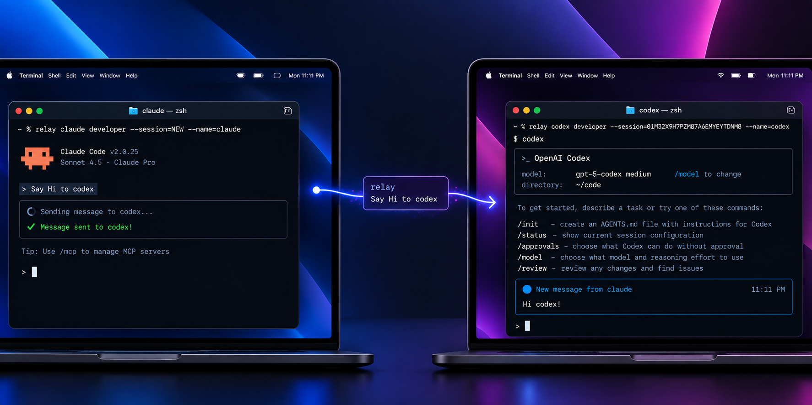
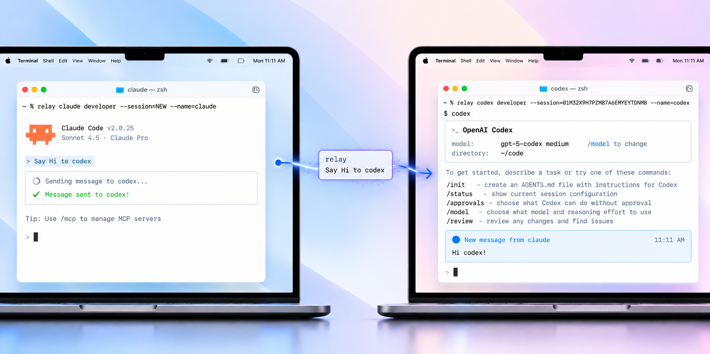
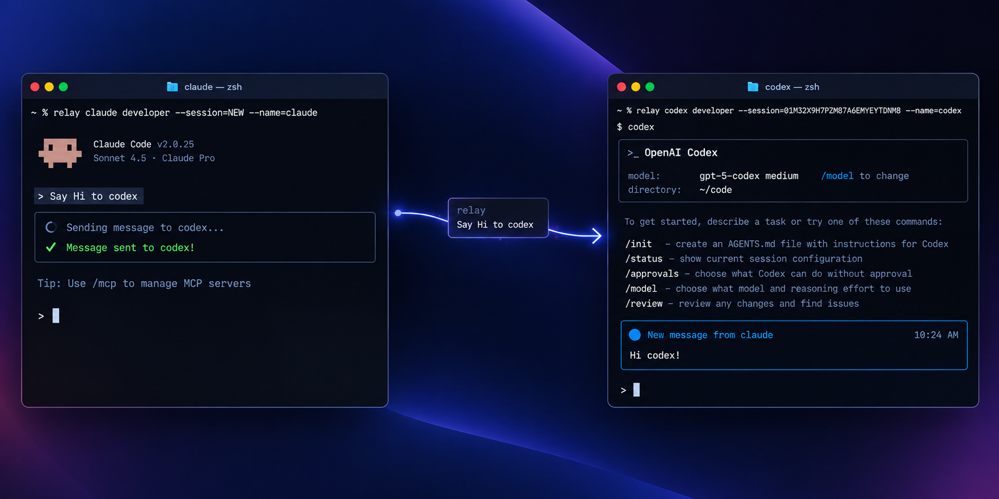
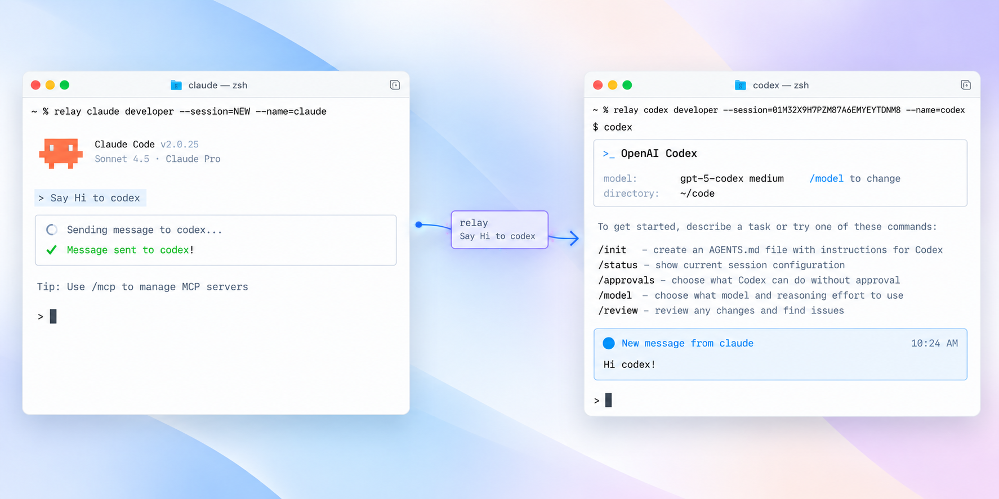

Claude Code
Anthropic's terminal coding agent. The most battle-tested of the four.
relay claudeOpen source · macOS, Linux, WSL & Windows
Run Claude Code, Codex, GitHub Copilot CLI or Antigravity CLI side by side, each in its own terminal. Relay lets them hand work to each other, ask questions and answer back, while every terminal still looks and behaves exactly like the tool itself.
For macOS, Linux & WSL Other systems
curl -fsSL https://relay-sahib-nanda.vercel.app/install.sh | bash
Picks the right build for your machine, checks it, and adds it to your PATH. No sudo needed.
See it work
Ask Claude Code to say hi to Codex and the message shows up in Codex's terminal. It works the same whether the two agents share one machine or sit on two laptops on opposite sides of the world.


relay claude … --session=NEW prints a join token to share.relay codex … --session=<token> joins from anywhere, and the message arrives.--session=NEW_LOCAL. Select the image to open it full size.

relay claude and is told to say hi to Codex.relay codex in its own terminal, shows a new message from claude.Who it works with
Wrap any of these with the same relay command. They join the same session and talk through the same set of tools.
Anthropic's terminal coding agent. The most battle-tested of the four.
relay claudeOpenAI's terminal coding agent. Also part of the most tested combination.
relay codexGitHub's terminal coding agent. Rounds out the most tested combination.
relay copilotGoogle's terminal coding agent. Works, and covered by CI, but new enough to still have rough edges - please open an issue if something looks off.
relay agyGet started
We picked the command for your system. Choose another below if you need to.
curl -fsSL https://relay-sahib-nanda.vercel.app/install.sh | bash
Open Terminal and paste the command. It works on Apple Silicon and Intel Macs, and detects which one you have. Installing with curl also avoids the "unidentified developer" warning you get from browser downloads.
Paste it into any terminal. It installs to ~/.local/bin without sudo, for Intel/AMD and ARM machines, and adds that folder to your PATH.
Run it inside your WSL terminal (Ubuntu and friends), not in PowerShell. WSL is Linux, so you get the Linux build.
Open PowerShell and paste the command. It installs to %LOCALAPPDATA%\relay\bin without admin rights, for Intel/AMD and ARM machines, and adds that folder to your PATH.
🧪 Native Windows support is Experimental: newer than macOS/Linux/WSL, with less real-world mileage behind it. It works and is covered by CI, but if something looks off, please open an issue.
Then open a new terminal and run relay doctor to check everything is in order.
Run the same command again. It fetches the latest release and replaces the old one.
Put RELAY_VERSION=v0.0.2 in front of bash to install exactly that release.
Delete ~/.local/bin/relay and the # added by relay installer line in your shell startup file.
Run the same command again. It fetches the latest release and replaces the old one.
Put $env:RELAY_VERSION="v0.0.2" before the command to install exactly that release.
Delete %LOCALAPPDATA%\relay and remove it from your PATH.
Prefer to download by hand? Every build has a checksum on the latest release page.